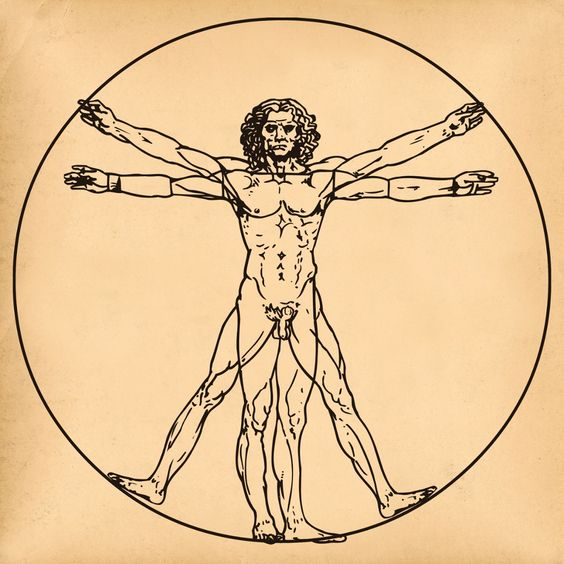
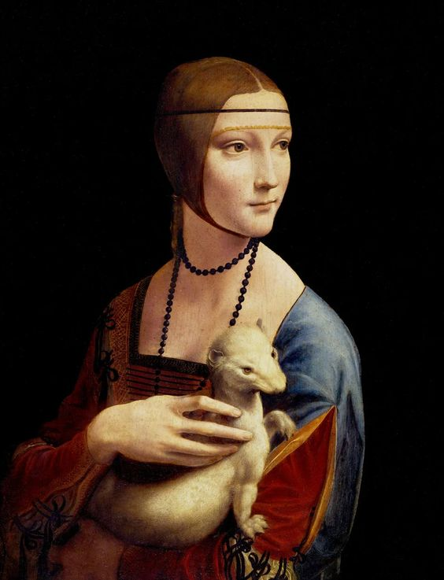

About Leonardo Da Vinci
Leonardo da Vinci (1452–1519) was an Italian polymath of the Renaissance period. He was born in Vinci, Italy, and is widely regarded as one of the greatest artists and thinkers of all time.
Artistic Career
Leonardo is renowned for his masterpieces such as the Mona Lisa, The Last Supper, and the Vitruvian Man. His innovative techniques and use of light and shadow revolutionized the art world.
Scientific Inventions
Beyond his artistic endeavors, Leonardo was also a prolific inventor and scientist. He conceptualized flying machines, war machines, and advanced anatomical studies.
Legacy
Leonardo's legacy extends far beyond his lifetime. His work continues to inspire artists, scientists, and thinkers around the globe, and his ideas have left an indelible mark on human history.
Quotes
"Simplicity is the ultimate sophistication."
"Learning never exhausts the mind."
"The noblest pleasure is the joy of understanding."
Fun Facts
- Leonardo was ambidextrous and could write with both hands simultaneously.
- He was a vegetarian and had a deep reverence for all living creatures.
- Leonardo kept detailed notebooks filled with sketches, scientific diagrams, and personal reflections.
Leonardo da Vinci's top 5 famous paintings
Mona Lisa
1.
.webp)
The Mona Lisa is perhaps the most famous painting in the world. It depicts a woman with an enigmatic expression, seated against a backdrop of a distant landscape..
The Last Supper
2.

This iconic mural depicts the moment Jesus announces that one of his disciples will betray him. It captures the reactions of the disciples to this revelation.
The Vitruvian Man
3.
This drawing is a study of the proportions of the human body, based on the writings of the Roman architect Vitruvius. It is a symbol of the intersection between art, science, and philosophy.
Lady with an Ermine
4.
This portrait features a young woman holding an ermine, a symbol of purity. It is known for its masterful depiction of the subject's facial expression and the delicate rendering of her clothing.
Annunciation
5.

This painting depicts the angel Gabriel announcing to the Virgin Mary that she will conceive and give birth to Jesus. It showcases da Vinci's skill in capturing emotion and movement.
FAN PAGE
FAN PAGE